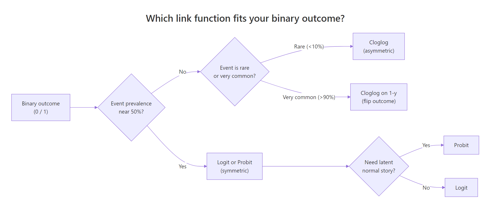
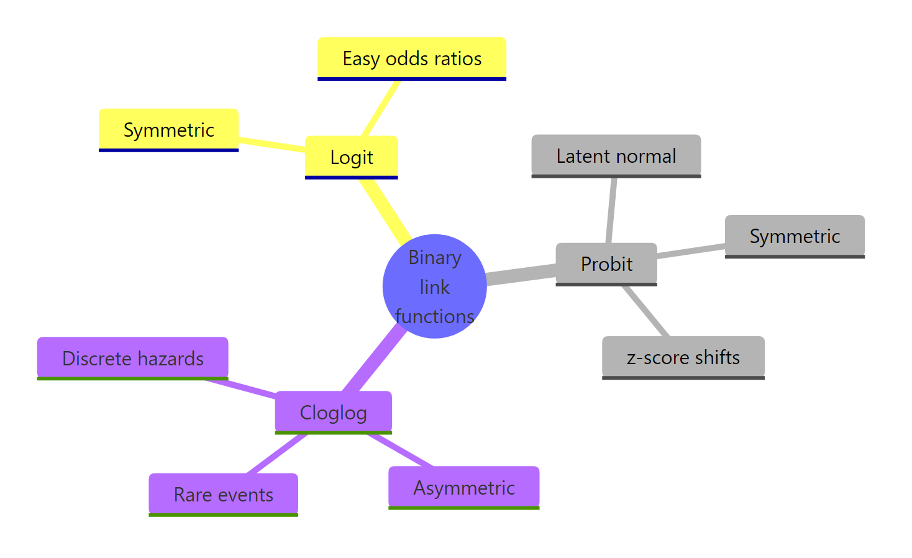

Probit & Complementary Log-Log in R: Binary Regression Alternatives
Probit and complementary log-log (cloglog) are two link functions for binary regression that you can drop into glm() in place of the logistic link. Probit swaps the logit for a normal cumulative density, which fits problems where the outcome arises from a latent continuous variable. Cloglog is asymmetric, which fits rare events where the event rate is far from 50 percent.
When should you use probit or cloglog instead of logistic regression?
Logistic regression is the default for binary outcomes because it gives clean odds ratios. But there are two situations where it is not the best choice. If your outcome comes from a latent normal variable, like a threshold-crossing decision in psychometrics or economics, probit fits the theory. If the event is rare, below roughly 10 percent prevalence, the symmetric logistic curve underfits the skew and cloglog tends to do better. Here is a three-way comparison on the same data so you can see the scale differences at a glance.
All three models fit here because the outcome is roughly balanced (13 manuals out of 32 cars, about 41 percent). The AIC values are essentially tied, so any link is defensible. Notice the probit coefficients are about 1.6 times smaller than the logit coefficients, and the cloglog coefficients differ more. The coefficient scale changes with the link, but the story the model tells, higher mpg and lower weight favor manual transmission, is the same.
Try it: Swap the predictors to hp + qsec and refit all three links. Which model wins on AIC?
Click to reveal solution
Explanation: cloglog wins by a whisker, but all three are within 0.3 AIC units. With balanced data, the choice barely matters.
How does the probit link function work?
Before we dive into code, here is the intuition. Probit assumes there is a hidden continuous variable behind each 0 or 1 outcome. Think of a customer who has a latent "readiness to buy" that we never observe; we only see whether the customer crossed a threshold and bought. If that latent variable is normally distributed, the probability of crossing the threshold is the area under a normal curve up to the linear predictor, which is exactly what the probit link captures.
The math captures this intuition in one equation:
$$P(Y = 1 \mid x) = \Phi(x'\beta)$$
Where:
- $P(Y = 1 \mid x)$ = probability the outcome is 1 given predictors $x$
- $\Phi(\cdot)$ = standard normal cumulative distribution function
- $x'\beta$ = linear predictor (the same sum of products you see in linear or logistic regression)
Let's see how the probit curve compares visually to logit and cloglog. The three link inverse functions all squeeze a real number into the $(0, 1)$ interval, but they do it differently.
Notice how logit and probit look almost identical in the middle region, with probit a touch steeper. Cloglog looks different: it creeps up slowly from 0 and then accelerates as it approaches 1. That asymmetry is the whole point of cloglog, which we will return to later. For now, fit a probit model on its own so you can read the output.
The mpg coefficient of about 1.02 means that a 1 mpg increase shifts the latent normal variable up by 1.02 standard deviations. The wt coefficient of about -4.69 means a 1000 lb increase in weight shifts it down by 4.69 standard deviations. These are z-score shifts, not probabilities, and that is the key difference from logit (where coefficients shift log-odds). The residual deviance dropped from 43 to 15, which tells you the two predictors explain a lot of the variation.
Try it: Fit a probit model predicting vs (engine shape: 0 = V, 1 = straight) from disp and hp. Save the fit to ex_probit_vs and print its AIC.
Click to reveal solution
Explanation: family = binomial(link = "probit") is the only change from the earlier fit. R does the rest.
How do you interpret probit regression coefficients?
The probit summary gives you coefficients on the z-score scale, which is honest but not very useful in a business meeting. What most readers actually want is "what happens to the probability when I change this predictor by 1 unit?" The answer is the marginal effect, and it depends on where you are on the S-curve. Near the middle, the curve is steep, so a 1-unit change in the predictor moves the probability a lot. Near the tails, the curve is flat, so the same change barely moves the probability.
A common summary is the Average Partial Effect (APE): compute the marginal effect for each observation, then take the average. For probit, the marginal effect at observation $i$ is:
$$\frac{\partial P(Y_i = 1)}{\partial x_j} = \phi(x_i'\beta) \cdot \beta_j$$
Where:
- $\phi(\cdot)$ = standard normal probability density function (not the CDF)
- $\beta_j$ = the coefficient for predictor $j$
- $x_i'\beta$ = the linear predictor for observation $i$
In R you compute this with one call to dnorm() on the fitted linear predictor and a multiplication.
The intercept APE is not interpretable, but the mpg APE of 0.126 means a 1 mpg increase raises the probability of manual transmission by about 12.6 percentage points on average. The wt APE of -0.578 means a 1000 lb weight increase lowers the probability by about 58 percentage points on average, though near the tails this drops toward zero. Average partial effects turn z-score shifts into the percentage-point language stakeholders expect.
margins or mfx packages for richer marginal effects in local R. They compute standard errors for APEs and handle categorical predictors automatically. Here we do it by hand to stay within WebR's package catalog, but for production code those packages are worth the install.Try it: Compute the APE for hp in probit_fit. Wait, hp is not in probit_fit. Instead, compute the APE for mpg a second way: use predict(probit_fit, type = "response") to get predicted probabilities, and verify that mean(dnorm(qnorm(p))) * coef(probit_fit)["mpg"] gives the same answer.
Click to reveal solution
Explanation: qnorm(p) recovers the linear predictor from the probability (since probit is the inverse of $\Phi$). Plugging it back into dnorm() gives the same $\phi(x'\beta)$ vector, so the APE matches.
What is the complementary log-log link, and when is it asymmetric?
Probit and logit both produce symmetric S-curves, so a 0.3 probability and a 0.7 probability are equally far from the midpoint 0.5. Many real-world events do not work that way. Suppose you are modelling whether a machine fails in a given day, and the daily failure rate is 2 percent. The probability is bunched near 0, not symmetric around 0.5. Cloglog is designed for this case. It comes from the proportional hazards family, which is why survival analysts reach for it often.
$$P(Y = 1 \mid x) = 1 - \exp(-\exp(x'\beta))$$
Where:
- $\exp(x'\beta)$ = the discrete-time hazard rate for the event
- $1 - \exp(-\text{hazard})$ = the probability the event occurs at least once
The function rises slowly when $x'\beta$ is very negative and accelerates sharply when $x'\beta$ approaches zero and beyond. That matches "long time of nothing, then a sudden event" phenomena: failure after long wear, disease after long exposure, default after long distress.
At $x'\beta = 0$ the logit says $P = 0.5$ (symmetric midpoint) and the probit also says $P = 0.5$. Cloglog says $P \approx 0.632$. That is the asymmetry showing up: cloglog has no special midpoint at 0.5; its "natural zero" is at $P = 1 - 1/e$.
Try it: What probability does cloglog predict at $x'\beta = 2$? Compute it and compare to what logit would predict.
Click to reveal solution
Explanation: At $x'\beta = 2$, cloglog is effectively certain the event happens, while logit still allows a 12 percent chance it does not. This gap grows fast in the right tail.
How do you fit and interpret a cloglog model in R?
Cloglog shines on rare events, so to show it working well we need data where the event rate is low. The cleanest way to produce that inside WebR, without an external file, is to simulate it. We will set the true data-generating process so you can check whether the fit recovers it.
The event rate is about 5 percent, which is firmly in rare-event territory. The fitted coefficients (-3.04, 0.60, -0.39) recover the true data-generating values (-3, 0.6, -0.4) almost exactly, which is the sanity check you always want. Cloglog coefficients do not translate to odds ratios, though; they are log hazard ratios. Exponentiating them gives the hazard-ratio scale.
A 1-unit increase in x1 multiplies the discrete-time hazard by about 1.82, so the instantaneous rate at which the event occurs gets 82 percent higher. A 1-unit increase in x2 multiplies the hazard by 0.68, reducing it by 32 percent. These are the cloglog analogues of the odds ratios you get from exponentiating logit coefficients, but the scale is hazard, not odds.
Try it: Fit a cloglog on y ~ x1 only (drop x2). Does the x1 coefficient change much compared to the two-variable fit?
Click to reveal solution
Explanation: Because we simulated x1 and x2 as independent, dropping x2 barely moves the x1 coefficient. That is not what you would see with correlated predictors.
How do you choose between logit, probit, and cloglog?
You now have three tools. When do you reach for each one? Three questions answer this in most cases.
- Is the event prevalence near 50 percent? If yes, logit and probit are both fine; pick on interpretability (logit for odds ratios, probit for z-score stories). Skip cloglog.
- Is the event rare, below 10 percent, or very common, above 90 percent? If yes, cloglog usually beats logit and probit on fit. For very common events, flip the outcome and fit cloglog on
1 - y. - Do you have a theoretical latent-normal story? If yes, probit is preferred for interpretability, even if logit also fits well.

Figure 1: Which link function fits your binary outcome.
In practice, fit all three and compare AIC. If the gap is under 2 units, prefer the link whose coefficient scale is easiest to communicate to your audience.
All three are well calibrated (mean predicted matches actual rate), but cloglog has the lowest AIC and BIC, which is consistent with cloglog being the true data-generating process here. The gaps are small but consistent. In real data, gaps of 5 or more AIC units are decisive; gaps below 2 are not.
Try it: Rerun the three-way comparison on mtcars am ~ mpg + wt (the balanced case from the first section). Does cloglog still win?
Click to reveal solution
Explanation: With balanced outcomes, the symmetric links (logit and probit) tie and cloglog is slightly worse. This is the opposite of the rare-event case and confirms that link choice matters most when the outcome is skewed.
Practice Exercises
Exercise 1: Fit a probit on the infert dataset
The built-in infert dataset is a case-control study of infertility. Fit a probit model with case as the outcome and age and parity as predictors. Save the fit to my_probit and print its AIC.
Click to reveal solution
Explanation: Only the family argument changes compared to a logistic regression. summary(my_probit) shows the coefficient for age is small and parity is negative (more pregnancies, less likely to be in the case group).
Exercise 2: Rare-event simulation and link comparison
Simulate 2000 observations with a logit-generated outcome at about 4 percent prevalence, fit both logit and cloglog, and report which link wins on AIC. Save the winning AIC to my_best_aic.
Click to reveal solution
Explanation: The data was generated from a logit process, so logit usually wins, but cloglog is close because the outcome is rare. The winner depends on the random seed. Running this with many seeds would show logit wins more often than cloglog when the true process is logit, even at 4 percent prevalence.
Exercise 3: Compute marginal effect for age in my_probit
Use the probit model from Exercise 1. Compute the average partial effect of age on the probability of being a case. Save it to my_ape_age.
Click to reveal solution
Explanation: age has a tiny APE because its coefficient in my_probit is small. The APE tells you the average change in probability of being a case for a 1-year age increase. Near zero means age is not doing much work in this model.
Complete Example
Let's put it all together on the infert dataset. We will fit all three link functions, tabulate their coefficients and fit statistics, and pick the best one.
On infert, where the case rate is 33 percent (balanced territory), logit, probit, and cloglog are all within rounding of each other. All three are perfectly calibrated on the full sample because the intercept absorbs the mean. With a 33 percent rate, no link has the structural advantage that cloglog had in the rare-event simulation. In that situation, picking logit for odds-ratio interpretability is the default recommendation.
Summary

Figure 2: Binary regression link functions at a glance.
The three binary-regression link functions compared:
| Link | Inverse formula | When to use | Coefficient scale | R call |
|---|---|---|---|---|
| Logit | $\dfrac{1}{1 + e^{-x'\beta}}$ | Default, balanced outcomes | Log-odds | binomial(link = "logit") |
| Probit | $\Phi(x'\beta)$ | Latent-normal theory | z-score shifts | binomial(link = "probit") |
| Cloglog | $1 - e^{-e^{x'\beta}}$ | Rare events, hazard stories | Log hazard ratios | binomial(link = "cloglog") |
Key takeaways:
- Every link fits with
glm()by changing one argument. - Logit and probit are symmetric and usually interchangeable.
- Cloglog is asymmetric and best for rare events or discrete hazards.
- Probit coefficients are z-score shifts; convert to probabilities via Average Partial Effects.
- Cloglog coefficients exponentiate to hazard ratios, not odds ratios.
References
- Agresti, A. Categorical Data Analysis, 3rd ed. Wiley (2012). Chapter 5.
- UCLA OARC Stats. Probit Regression in R. Link
- R Core Team.
glm()reference. Link - StataCorp.
cloglogmanual. Link - Rodriguez, G. Generalized Linear Models: Section 3.7 Other Choices of Link. Link
- Wooldridge, J. M. Econometric Analysis of Cross Section and Panel Data, 2nd ed. MIT Press (2010). Chapter 15.
- Mustafa, A. A Gentle Introduction to Complementary Log-Log Regression. Towards Data Science. Link
Continue Learning
- Logistic Regression in R: From glm() to Odds Ratios, ROC, and AUC: the parent tutorial on the default link.
- Poisson Regression in R: when the outcome is a count, not binary.
- Ordinal Logistic Regression in R: probit and logit for ordered outcomes.